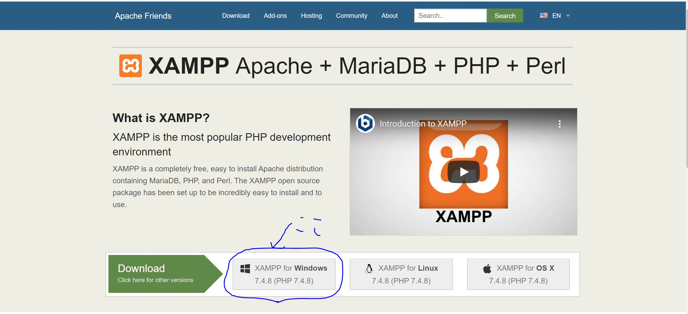
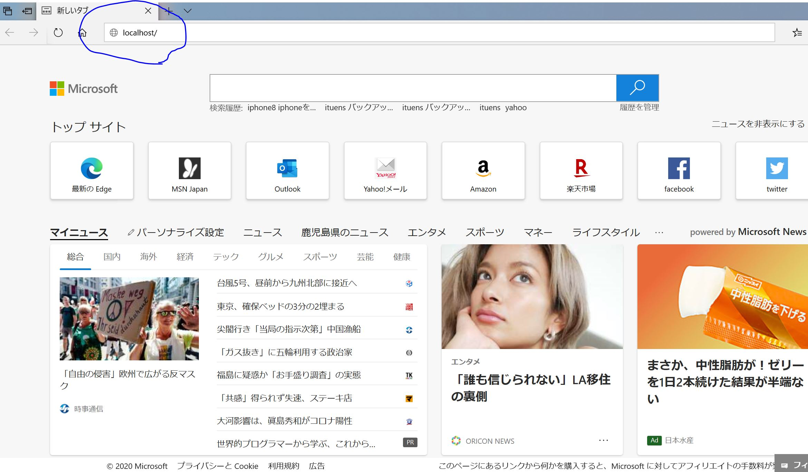
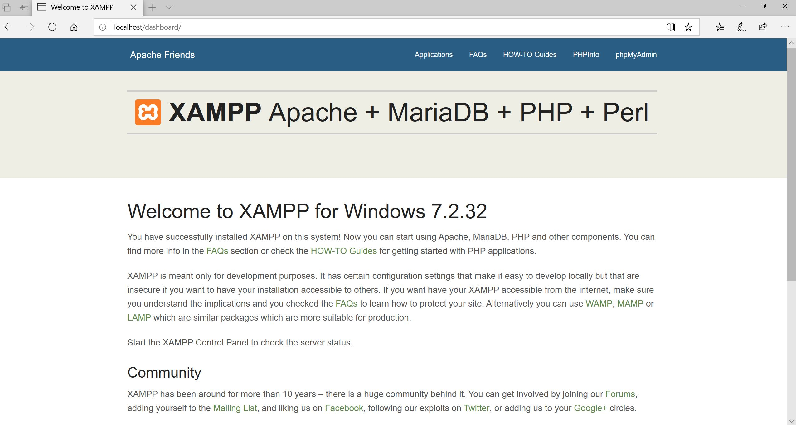

mysqlの導入
XAMPP, mysqlのインストール
- .exeファイルをダウンロードしよう
まず、XAMPPの公式ホームページからダウンロードしてきてインストールをしようと思います。 公式サイトはこちら ダウンロードは下の写真の青丸のところです。 
- .exeファイルを起動しよう
.exeファイルをダウンロード出来たら起動します。いろんな設定を行うことが出来ますが細かな設定をしたいということがなければデフォルトのまま次へどんどん進んでいきましょう!数回[Next]ボタンをクリックするとインストールが開始します。
- XAMPP Control Panel を起動しよう
インストールが完了すると[finish]ボタンがある画面が表示されるのでクリックします。すぐに「language」設定画面が表示されるため、English(米国国旗)にチェックがあるかを確認し[save]ボタンをクリックします。 すると、XAMPP Control Panelが起動するので、Apache, mysqlの[start]をクリックして起動することが出来ます。
次回XAMPP Control Panelを起動するときはC:\xampp\xampp-control.exeをクリックすると開きます。

動作確認
localhostに接続する
ブラウザを開きます。googleやyahooなどです。そのアドレスバーに"localhost"と入力してEnterを押します。すると下のようになることを確認してください。
 mysqlの起動・設定
- MySQLの起動
XAMPP Control Panelを起動してApache, MySQLの[start]をクリックします。起動するとApache, MySQLの文字背景が緑に変化します。
- MySQLへ接続する
MySQLへ接続するためにはMySQLクライアントを利用します。ここではコマンドライン・クライアントと呼ばれるMySQLコマンドラインツールを利用して接続します。なお、PHPには内部にMySQLクライアントが組み込まれています。また、別途にインストールする必要はなく起動できるようになっています。
では動かしてみましょう。コマンドプロンプトを起動してください左下の検索で「コマンドプロンプト」と入力すると開くことが出来ます。 そして、次のコマンドを実行します。 「c\xampp\mysql\bin\mysqle」